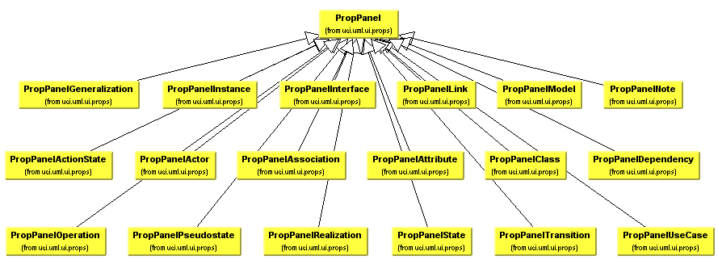
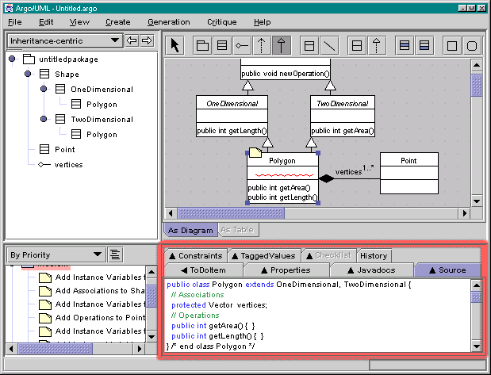

| Now, each of the figures and assocations of a UML diagram have properties. This would be the Properties tab located in the Details pane of the figure below. So if you added a new element from the FigNodeModelElement or FigEdgeModelElement hierarchy, then you would want to extend PropPanel to form a new properties tab for the element. |

See also TabSpawnable and CookBook
Back to Argo/UML Home